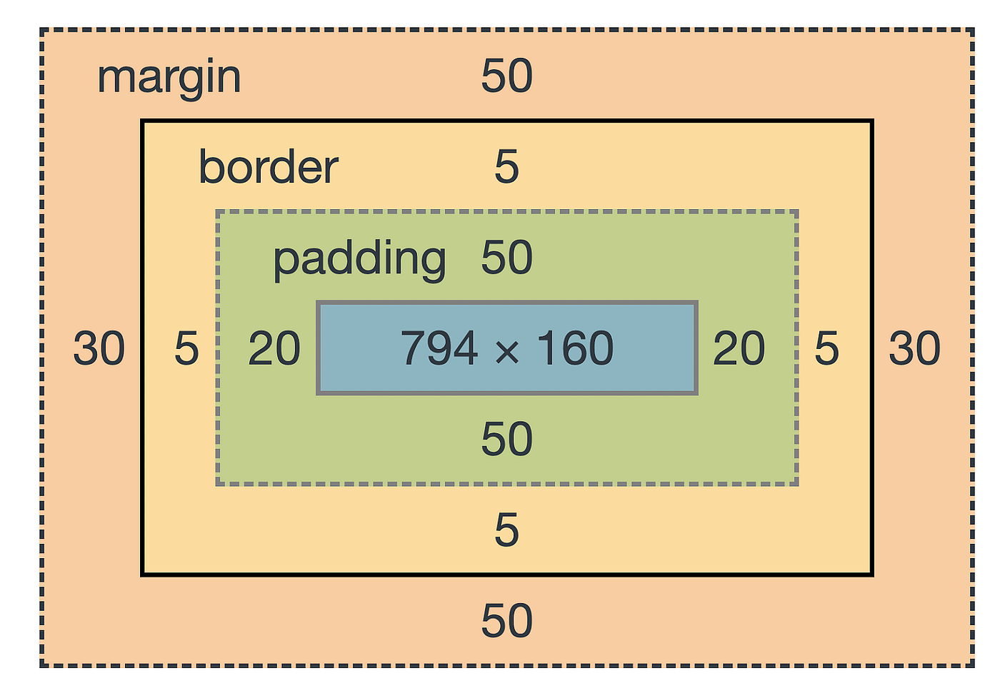

Model pudełkowy
Model pudełkowy to sposób, w jaki przeglądarka wyświetla elementy HTML. Składa się z:
- zawartości (content) - miejsce, gdzie znajduje się treść elementu
- marginesu wewnętrznego (padding) - odstęp między zawartością a obramowaniem
- obramowania (border) - ramka otaczająca element
- marginesu zewnętrznego (margin) - odstęp między elementem a innymi elementami

Padding
Padding (margines wewnętrzny) to odstęp między zawartością elementu (content) a jego obramowaniem (border)
div {
padding: 10px;
}padding-top, padding-right, padding-bottom, padding-left - właściwości paddingu poszczególnych stron elementu
div {
padding-top: 10px;
padding-right: 20px;
padding-bottom: 10px;
padding-left: 30px;
}Obramowanie
border-style - styl obramowania
- none - brak obramowania
- solid - ciągła linia
- dashed - kreskowana linia
- dotted - kropkowana linia
- double - podwójna linia
- groove - wypukły efekt
- ridge - wklęsły efekt
- inset - wklęsły efekt
- outset - wypukły efekt
- hidden - ukryte obramowanie
div{
border-style: solid;
}border-width - szerokość obramowania
- thin - cienkie obramowanie
- medium - średnie obramowanie
- thick - grube obramowanie
- jednostka - można określić szerokość za pomocą jednostek (np. 2px)
div{
border-width: 2px;
}border-color - kolor obramowania
div{
border-color: black;
}border - skrót dla powyższych właściwości obramowania
div{
border: 2px solid black;
}border-radius - promień zaokrąglenia narożników obramowania
#div1{
border-radius: 10px;
}
#div2{
border-radius: 3% 10%;
}border-top, border-right, border-bottom, border-left - właściwości obramowania poszczególnych stron elementu
div{
border-top: 2px solid black;
border-right: 4px ridge red;
border-bottom: 3px solid black;
border-left: 5px inset blue;
}Margin
Margin (margines zewnętrzny) to odstęp między elementem a innymi elementami
div {
margin: 10px;
}margin-top, margin-right, margin-bottom, margin-left - właściwości marginesu poszczególnych stron elementu
div {
margin-top: 40px;
margin-right: 10px;
margin-bottom: 20px;
margin-left: 10px;
}Skróty dla powyższych właściwości (i niektórych innych) poszczególnych stron elementu
- 1 wartość - dotyczy wszystkich stron
- 2 wartości - pierwsza dotyczy górnej i dolnej, druga lewej i prawej
- 3 wartości - pierwsza dotyczy górnej, druga lewej i prawej, trzecia dolnej
- 4 wartości - kolejno górna, prawa, dolna, lewa
div{
border-style: solid none dashed double;
border-width: 2px 4px 6px;
border-color: red blue;
margin: 10px 20px 30px 40px;
padding: 5px 10px;
}